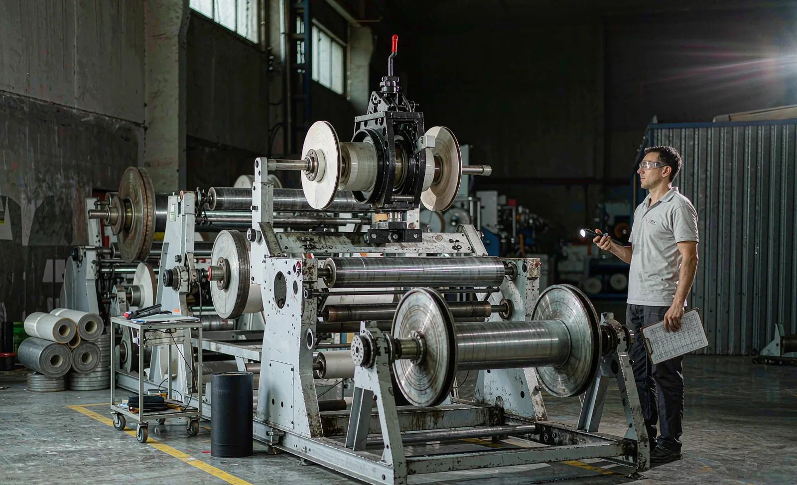
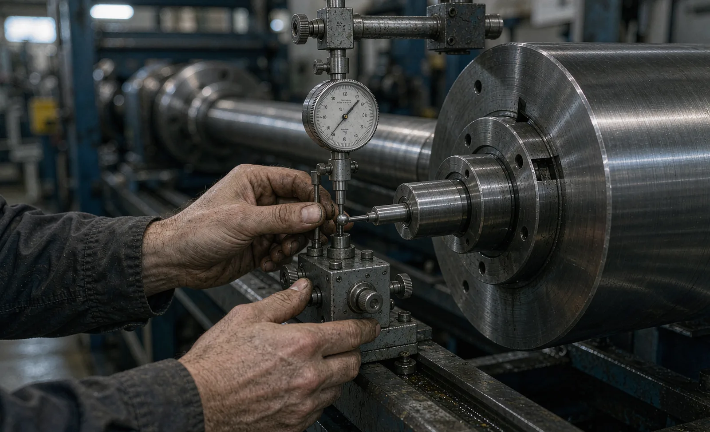

Published September 18, 2026 | By HDPTH Technical Editorial Team

Used slitter rewinders change hands for understandable reasons: plants upgrade capacity, portfolios shift, lines are redeployed. The used market can deliver a sound machine at 30–60% below new pricing — or one whose bearings, shafts and obsolete controls consume that saving within a year. The difference is rarely visible in photographs; it is found in a structured inspection. This guide sets out what to check, and how to convert findings into price and contract terms.
Start before the visit: match the machine to your product
Most disappointing used-machine purchases fail on fit, not condition. Before evaluating any machine, write down what you will actually run through it: lightest and heaviest basis weight, widest and narrowest slit widths, minimum core size, maximum roll diameter and weight, target line speed, and required width tolerance. Compare these against the machine’s rated web width, speed range, maximum roll weights and winding method. A machine that cannot hold tension on your 15 gsm spunlace is not a bargain at any price. Also confirm compatibility with your slitting method — razor, shear or score — because converting a used machine to another method is a project, not an adjustment.
Mechanical inspection: the parts that set roll quality
Wear concentrates where the machine touches the product and where it transmits force. Work through these items with a dial indicator, a straightedge and good lighting:
- Rewind shafts and chucks: measure runout at the shaft body and core-contact surfaces. Excessive runout or worn lug teeth telegraph into roll hardness variation and core damage.
- Unwind and nip rolls: check coated surfaces for crown loss, glazing, cuts and flat spots. A worn nip roll is one of the most expensive single replacements.
- Knife holders and anvil bands: inspect wear grooves, remaining grinding margin, holder clamping and indexing. Count usable knives and holders as part of the deal.
- Drive train: check gearbox backlash, belt condition and coupling wear; listen under power. Rebuilt drives are negotiable; undetected ones are not.
- Roller bearings and frames: feel for play in every web roller bearing, and inspect the frame for cracks, repaired welds and leveling feet.
Photograph everything and record readings — the goal is not to reject the machine, but to price the truth.
Controls and obsolescence: the silent budget killer
A mechanically sound machine with unsupported controls is a liability. Identify the PLC family and generation, HMI model, drive families and safety controller if fitted. Then ask: are spare parts still purchasable, is the program backed up and documented, and can your team maintain it? Controls two generations behind current platforms may run fine — until a CPU or drive fails and replacement lead time is measured in months. If the seller cannot hand over the PLC program with comments, drive parameter lists and as-built electrical drawings, assume a controls retrofit quote before you commit. For what modern integration should look like, see recipe management and line data.
| Inspection area | What to check | Risk if skipped |
|---|---|---|
| Product fit | Web width, speed, roll weights, knife method vs your range | Machine runs, but never on your product at your rate |
| Mechanical wear | Shaft runout, roll surfaces, knife holders, drive backlash, bearing play | Repair spend exceeds the purchase discount |
| Controls | PLC/HMI/drive generation, spares availability, program backups, drawings | One failed component idles the machine for months |
| Run test | Acceleration to speed, tension stability, roll change, alarm history | Latent faults appear after payment, at your cost |
| Documentation | As-built drawings, manuals, maintenance log, compliance file | Commissioning, maintenance and audits all become harder |
The run test: never buy blind
A power-on run under load is the highest-value step in used-equipment buying. Ask the seller to run the machine, ideally on material similar to yours, through a sequence that exposes real behavior: acceleration to rated speed, a hold at speed, tension ramping, a roll change at the unwind, and several stop-start cycles. While it runs, watch for vibration at speed, web tracking drift, tension stability on the HMI trend, and how the operators coax the machine — heavy manual intervention is a symptom. Request the PLC alarm history screen: a log full of recurring drive and tension faults tells you what the sales photos will not. If the machine cannot be run on site, require a dated video run with the trend screens visible, and hold a meaningful final payment until commissioning acceptance in your plant.
Converting findings into price and contract terms
An inspection only creates value when it changes the deal. Price every finding as a repair or retrofit quotation — shaft regrinding, roll recoating, control upgrades, missing documentation — and subtract the total from the asking price. Put three conditions in writing: documentation handover (drawings, programs, manuals, maintenance log, and any compliance file with its risk assessment) as a condition of sale; a defined commissioning acceptance at your site; and retention of final payment until acceptance passes. Sellers resist these terms less than buyers expect — a serious buyer with written conditions is also the buyer most likely to close. If you plan to rebuild and modernize, pair the inspection with the commissioning checklist and site preparation checklist.

Evaluating between a used line and a new machine?
Send HDPTH your material range, widths, speeds and roll specifications. We will give an honest comparison — including when a new machine with warranty, spares and support is the lower-risk buy.
Submit Your Project InquiryQuestions to put to every seller
- What material, widths and speeds did this machine run, and why is it for sale?
- Can you demonstrate a full run at rated speed with a roll change while I watch the tension trend?
- Which PLC, HMI and drives are fitted, are they still supported, and are program backups included?
- What is the last recorded maintenance, and can I see the log?
- Which wear items — shafts, rolls, knife holders — will you recondition or credit before sale?
Planning the full purchase?
Read our guides on the factory acceptance test checklist and warranty and spare parts to complete your used-equipment risk framework.
Contact HDPTHFrequently asked questions
Is buying a used slitter rewinder a good idea?
It can be, when the machine matches your material range, its wear condition is verified by inspection, and spare parts or retrofit paths still exist. Used machines typically cost 30 to 60 percent less than comparable new equipment, but unverified wear on shafts, bearings, drives and knives can consume the savings within the first year. Treat the purchase like commissioning in reverse: prove the machine runs your material at your speed before money changes hands.
What are the most expensive wear items to check on a second-hand slitter rewinder?
Prioritize rewind shafts and chucks (runout and core-contact wear), unwind and nip roll surfaces (crown loss, scoring, coating damage), drive components (backlash in gearboxes, belt condition), knife holders and anvil bands (wear grooves, remaining regrinding margin), and web rollers with bearing play. These parts drive finished-roll quality directly, and replacement plus labor often exceeds the discount that made the used machine attractive.
How can I verify the age and true usage of a used machine?
Cross-check three sources: the machine serial number against the OEM build records, the controller and drive firmware versions with their release dates, and physical evidence such as roller surface condition, way wear, hour counters in the PLC, and maintenance stickers. Sellers’ stated age and running hours should be treated as claims until the hardware confirms them. A machine whose controls are two generations obsolete will cost more to support than to replace.
Should the seller run the machine before I commit to purchase?
Yes — a power-on run under load with your material, or at minimum a similar material, is the single most valuable step in used-equipment buying. The test should include acceleration to rated speed, tension ramping, an unwind roll change and a stop-start sequence, while you watch for vibration, tracking drift, tension stability and alarm history. If an in-person run is impossible, require a dated video run with the controller face and trend screens visible, and keep the final payment contingent on successful commissioning.
What documentation must come with a used slitter rewinder?
As a minimum: electrical and pneumatic drawings matching the as-built machine, the PLC and HMI program with backup files, drive parameter lists, original mechanical assembly drawings for key units, the maintenance log, and any CE or local compliance file with the risk assessment. Without the controls backup, a single failed controller can idle the machine for months. Make documentation handover a written condition of the sale, not an afterthought.
Sources
- OSHA: Machine guarding resources for moving webs, rollers and point-of-operation hazards
- UK HSE: Work equipment and machinery guidance — safe use and maintenance duties
- ISO 12100: Risk assessment and risk reduction
- ANSI B11 committee: safety requirements for machinery, including converting machinery